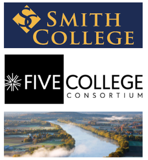

Student Researcher
February 2022 - May 2022
The Connecticut River Valley Precious Plastics (CT Precious Plastics) is one branch of the global Precious Plastics Universe recycling movement. It's run by the Smith College student team with support from the
Design Thinking Initiative and
Center for Design and Fabrication.
At the core of the team's work is ensuring that CT Precious Plastics is co-facilitated with our project partners and reflective of the needs of our local community. Documentation is shared, and consistent communication is maintained with partners.
When I joined in February 2022, they had created an open-sourced shredder machine for shredding plastics into flakes. Represented by students from both STEM and the humanities, the team leverages one another's strengths to achieve its deliverables. That semester, I worked as a student researcher, researching additional open-sourced machines that would complement the shredder.
Designing and fabricating an extruder

Design considerations for researching and selecting the 2nd machine
- Mobility and Size: Needs to be portable and easy to transport
- Capacity: Costs for materials and engineering needs within our capacity
- Maintenance and Safety: Easy and safe for the general public to maintain
We selected a Lyman-mulier, open-sourced extruder that turns shredded plastic into a 3D printer filament. Can fit on a table and be transported on wheels.
Created A comprehensive BOM (Bill of Materials) to determine which parts we needed to buy and which we could 3D print.
Built The extrusion part of the machine, which included the 3D-printed hopper, pipe nozzle, and gear motor.
Community Engagement Lead
September 2022 - May 2023
Our team grew, so we split into two sub-teams: Fabrication and Community Engagement, which I led. After defining our priority - to strengthen our relationships with the local community - our sub-team of four conducted eight interviews with local organizations on their plastic upcycling visions and how CT Precious Plastics could support their needs.
- Identified relevant groups, including maker spaces on grassroots making and community plastic upcycling
- Used inductive coding and searched for patterns across the interviews to describe the content
Based on our findings, we articulated five areas for community engagement.
As one of our themes, I created a website to clarify CT Precious Plastics' offerings and increase visibility.
I chose Google Sites over other builders for its simple editorial collaboration with our project partners.

Some of the most valuable feedback we received was about how to access and use the machines. We realized that the machine's current location at Smith College was physically inaccessible to the non-college community. In reflection, we developed a new goal: upon completion, the machines will be rehomed to one of our partners' maker spaces with more flexible hours and technical support.
Scrum Master
September 2023 - Present
As Scrum Master, I am responsible for facilitating and ensuring that the two sub-teams are on track to achieving our deliverables.
Our current team has used a design process that combines the iterative nature of design thinking with the productivity of Scrum.
Tailoring our own hybrid approach allows us to accommodate our team's dynamics such as having weekly instead of daily stand-ups.
Over the years before Scrum, our team experimented with different management practices and tools, but we found them unsuitable for our needs.
Through experimentation with different project management methodologies, we found Scrum offered the most flexibility based on our team’s needs,
allowing us to set time-boxed goals for sprints, share updates during the weekly stand-ups, and determine next steps in retrospectives.
Along with improved project management, in the combined current team of six, I prioritized:
- Strengthening partnerships
- Finishing and testing the extruder
- Developing a user manual
Strengthening Partnerships

Smith College: Spreading awareness to faculty and student organizations, including sharing our research with foundational engineering classes.
Five College Consortium: Combining machines and research findings with local colleges. We collaborated on research with a University of Massachusetts Engineering Professor on plastic melting temperatures.
In Fall 2023, when the Center for Design and Fabrication underwent repairs, we innovated by finding support with the new Mount Holyoke College Precious Plastics team in consolidating machinery resources. This partnership led to a new opportunity where a local school reached out for a Spring 2023 educational plastic workshop.
Local community: Emphasizing CT Precious Plastics as a community of collective knowledge sharing.
Finishing and testing the extruder
This semester involved finishing the extruder’s electronics and troubleshooting the hardware specifications including the gear motor.
Proper control of the extrusion process improves safety and functionality.
Developing a user manual
Leading the design of a community user manual with step-by-step instructions on using the machines for all skill levels, resources on recycling practices, and the significance of community participation in mitigating plastic pollution. Expected publication date: February 2024
Reflection
I am proud of our team for increasing plastic upcycling awareness in the local community through
the machines and community engagement. Minor changes to our organizational dynamics were anticipated
but readjusted in alignment with our mission. For example, we had to adjust deadlines to address setbacks,
such as when we needed to fix the shredder after its motor coupler broke during a shredding session.
Overall, it is important to embrace an agile mindset: to remain curious and adaptable to change. When members
joined or graduated, we learned to innovate by integrating new talents and redistributing responsibilities
while remaining committed to our goals. On a personal level, my experiences on the team dovetailed my
environmental and computer science majors, helping me realize my career interests to be a sustainable
HCI (human-computer-interaction) designer.
Project: Annual Report for aGILE